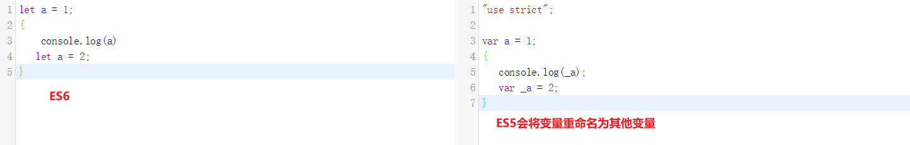
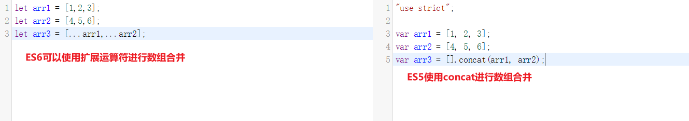
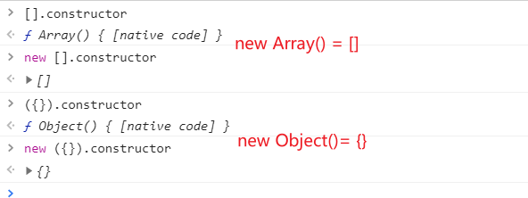

日常的学习笔记，包括 ES6、Promise、Node.js、Webpack、http 原理、Vue全家桶，后续可能还会继续更新 Typescript、Vue3 和 常见的面试题 等等。
let、const和var的区别
let、const 和 var都是用来定义变量的，那它们有什么区别呢？
var的特点
对全局变量造成污染
1
2var a = 1;
console.log(window.a); //1存在变量提升机制
1
2console.log(name); // undefined
var name = "a";var可以被重复声明1
2
3var a = 1;
var a = 2;
var a = 3;var的作用域只有全局作用域和函数作用域1
2
3
4{
var a = 1;
}
console.log(a); // 1
let的特点
不可以被重复声明
1
2
3
4let a = 1;
let a = 2;
let a = 3;
// Identifier 'a' has already been declared存在块级作用域
1
2
3
4
5for(let i = 0; i <10; i++){
setTimeout(function(){
console.log(i) // 0 1 2 ... 8 9
})
}如果使用
var进行定义，则会全部输出101
2
3
4
5for(var i = 0; i <10; i++){
setTimeout(function(){
console.log(i) // 10
})
}暂时性死区
1
2
3
4
5let a = 1;
{
console.log(a); // Cannot access 'a' before initialization
let a = 2;
}因为ES6在定义变量的时候，会把同名的变量定义为两个变量（如 下图 所示）
不会绑定在
window上1
2let a = 1;
console.info(window.a); // undefined
const的特点
const是不可变的量，也就是常量。
const定义的变量不可以对其值进行修改。1
2const PI = 3.14;
PI = 3.15; // Assignment to constant variable.const可以修改同一地址（堆内存）中的值。1
2
3const a = { b: 1 };
a.b = 2;
console.log(a); // {b: 2}
解构赋值
在解构中，有下面两部分参与：
解构的源：解构赋值表达式的右边部分。
解构的目标：解构赋值表达式的左边部分。
数组解构(Array)
基本使用
1
2
3
4let [a, b, c] = [1, 2, 3];
// a = 1
// b = 2
// c = 3嵌套使用
1
2
3
4let [a, [[b], c]] = [1, [[2], 3]];
// a = 1
// b = 2
// c = 3可以忽略未定义变量
1
2
3let [a, , b] = [1, 2, 3];
// a = 1
// b = 3非完全解构
1
let [a = 1, b] = []; // a = 1, b = undefined
字符串解构等
在数组的解构中，解构的目标若为可遍历对象，皆可进行解构赋值。
1
2
3
4
5
6let [a, b, c, d, e] = 'hello';
// a = 'h'
// b = 'e'
// c = 'l'
// d = 'l'
// e = 'o'解构默认值
1
let [a = 2] = [undefined]; // a = 2
当解构模式有匹配结果，且匹配结果是
undefined时，会触发默认值作为返回结果。1
2
3let [a = 3, b = a] = []; // a = 3, b = 3
let [a = 3, b = a] = [1]; // a = 1, b = 1
let [a = 3, b = a] = [1, 2]; // a = 1, b = 2- a 与 b 匹配结果为 undefined ，触发默认值：a = 3; b = a =3
- a 正常解构赋值，匹配结果为 a = 1*，b 匹配结果 *undefined ，触发默认值：b = a =1
- a 与 b 正常解构赋值，匹配结果为 a = 1，b = 2
扩展运算符
1
2
3let [a, ...b] = [1, 2, 3];
// a = 1
// b = [2, 3]扩展运算符，又叫 展开运算符 或 剩余运算符。可以利用扩展运算符，对数组进行合并。（如 下图 所示）
对象解构(Object)
基本使用
1
2
3
4
5
6let { foo, bar } = { foo: 'aaa', bar: 'bbb' };
// foo = 'aaa'
// bar = 'bbb'
let { baz : foo } = { baz : 'ddd' };
// foo = 'ddd'可嵌套/可忽略
1
2
3
4
5
6
7let obj = {p: ['hello', {y: 'world'}] };
let {p: [x, { y }] } = obj;
// x = 'hello'
// y = 'world'
let obj = {p: ['hello', {y: 'world'}] };
let {p: [x, { }] } = obj;
// x = 'hello'非完全解构
1
2
3
4let obj = {p: [{y: 'world'}] };
let {p: [{ y }, x ] } = obj;
// x = undefined
// y = 'world'解构默认值
1
2
3
4let {a = 10, b = 5} = {a: 3};
// a = 3; b = 5;
let {a: aa = 10, b: bb = 5} = {a: 3};
// aa = 3; bb = 5;扩展运算符
1
2
3
4let {a, b, ...rest} = {a: 10, b: 20, c: 30, d: 40};
// a = 10
// b = 20
// rest = {c: 30, d: 40}在ES6中，我们可以通过 扩展运算符 实现很多应用，例如 深拷贝和浅拷贝。
参考文献 ES6 解构赋值 | 菜鸟教程
深拷贝和浅拷贝
深拷贝：拷贝后与原数组无关，会使 拷贝后的数组 在堆中指向一个新的内存空间。
浅拷贝：拷贝后与原数组有关，新数组 与 原数组 指向同一个堆内存。
浅拷贝
Object.assign()
Object.assign() 方法可以把任意多个的源对象自身的可枚举属性拷贝给目标对象，然后返回目标对象。但是 Object.assign() 进行的是浅拷贝，拷贝的是对象的属性的引用，而不是对象本身。
1 | let obj = {a: {name: "mxs", age: 26}}; |
Array.prototype.concat()
1 | let arr = [1, 2, { |
Array.prototype.slice()
1 | let arr = [1, 2, { |
扩展运算符
扩展运算符只能拷贝一层 对象 / 数组
1 | let obj1 = {name:'zd'}; |
可以发现两个对象都改变了，这就是只实现了 浅拷贝。
如果想要实现 深拷贝，会十分的麻烦。
1 | let obj1 = {name:'zd'}; |
深拷贝
JSON.parse(JSON.stringify())
用JSON.stringify将对象转成JSON字符串，再用JSON.parse()把字符串解析成对象。
1 | let obj1 = {name:'zd'}; |
但是需要注意的是，(JSON.stringify([value])) 这种方法虽然可以实现深拷贝，但是却不能拷贝 Function、undefined 和 Symbol。
1 | let obj = {name:'zd', age:{}, count:26, a:function(){}, b:null, c:undefined, d:Symbol('zd')} |
我们可以看到，最终被拷贝下来的，只有 String 、Object、 Number 和 Null 这几种数据类型。
lodash库
我们可以通过 loadash库中的 cloneDeep 方法来实现深克隆。
1 | const _ = require('lodash'); |
手写实现深拷贝
我们先来看一下完整的代码
1 | function deepClone(obj,hash = new WeakMap()) { |
如果我们想要手写一套深克隆的函数方法，我们需要先搞懂其实现思路。
简单来说，其实现思路就是 类型判断，克隆数据类型， 遍历循环，最后进行 结果输出。
我们先思考，为什么要进行 类型判断 ？
在此之前，我们需要先要清楚 数据类型判断方式。
- typeof
- instanceof / constructor
- Object.prototype.toString.call([value])
然后我们再来看代码
1
2
3
4
5
6
7// 如果obj是null或者undefined，则直接将结果返回
if (obj == null) return obj;
// 如果obj是基础数据类型或者函数，则直接将结果返回(也就是说，函数不需要进行任何处理)
if (typeof obj !== 'object') return obj;
// 如果obj不是对象或数组，则直接将结果返回
if (obj instanceof Date) return new Date(obj);
if (obj instanceof RegExp) return new RegExp(obj);通过上面的代码，我们可以发现，剩下的只有两种数据类型 数组 和 对象。
那么我们就清楚了，进行 类型判断 ，其目的就是为了将需要进行深克隆数据类型筛选出来。
然后再思考，如何 克隆 传入对象的 数据类型 呢？
最常用的方案如下
1
let cloneObj = Object.prototype.toString.call(obj) === ['Object Array'] ? [] : {};
但是这种写法太麻烦了，我们有更简单的实现方案。
1
2// obj不是数组就是对象，将其进行克隆
let cloneObj = new obj.constructor;根据 原型链 的指向原则，我们可以利用上述方案来创建一个新的数据类型对象。(如 下图 所示)

克隆数据类型 的目的，其实就是为了进行下一步的 遍历循环。
接着，我们要进行 遍历循环 。
1
2
3
4
5
6for (const key in obj) {
if (Object.hasOwnProperty.call(obj, key)) {
// 进行递归，实现深克隆
cloneObj[key] = deepClone(obj[key]);
}
}利用
forin进行循环，在对象复制前，我们都会将值进行递归，再次执行当前方法，判断是否有深层属性。直到递归至没有深层属性为止。然后将结果赋值给
cloneObj，最后把结果进行输出。1
return cloneObj
但是这种写法还存在一个问题，就是无法进行 循环引用 。
如果要进行循环引用，就会发生 栈内存溢出 的情况。
1
2
3
4
5let obj = {a:{name:'mxs'}}
obj.b = obj;
let allObj = deepClone(obj);
obj.a.name = 'zd';
console.log(obj); // Maximum call stack size exceeded为了处理这种问题的发生，我们还需要在进行一步操作。
最后，我们需要对 异常情况 进行处理
1
hash = new WeakMap()
设定一个
WeakMap数据类型（关于WeakMap，可以 参考文献 WeakMap-JavaScript | MDN ，或查看我的另一篇博客 ES6 | weakMap）1
2if(hash.has(obj)) return hash.get(obj);
hash.set(obj, cloneObj);如果是
Object，我们就将其放到weakMap中。如果在拷贝之前，这个Object就已经存在了，我们就直接将其返回。至此，我们的 深拷贝 就完成了。
我们可以通过这种思路，写出很多种 深克隆 的方案。
本篇文章由莫小尚创作，文章中如有任何问题和纰漏，欢迎您的指正与交流。
您也可以关注我的 个人站点、博客园 和 掘金，我会在文章产出后同步上传到这些平台上。
最后感谢您的支持！